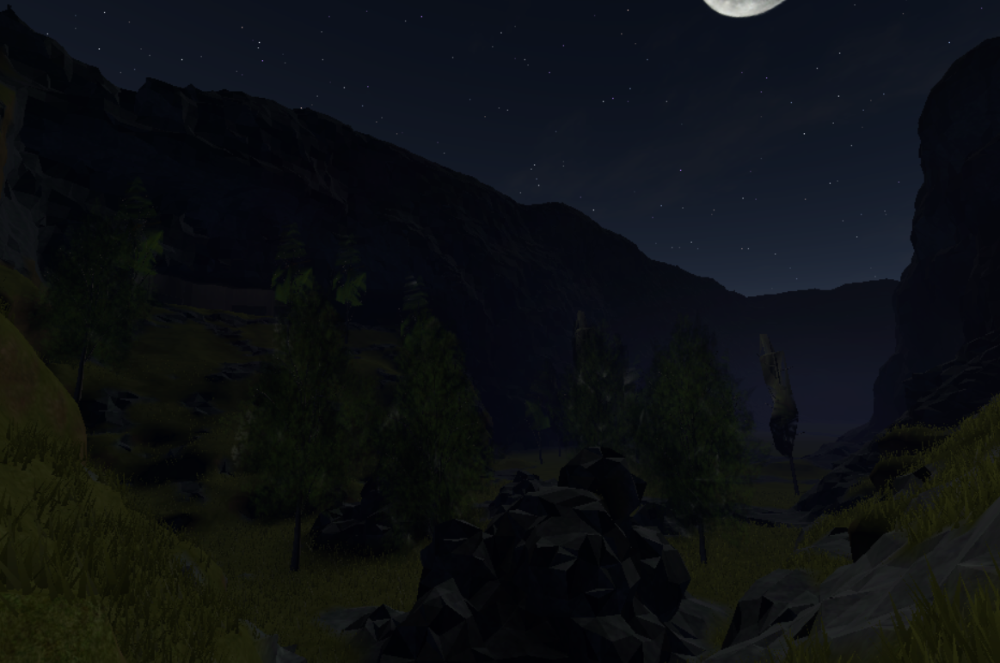
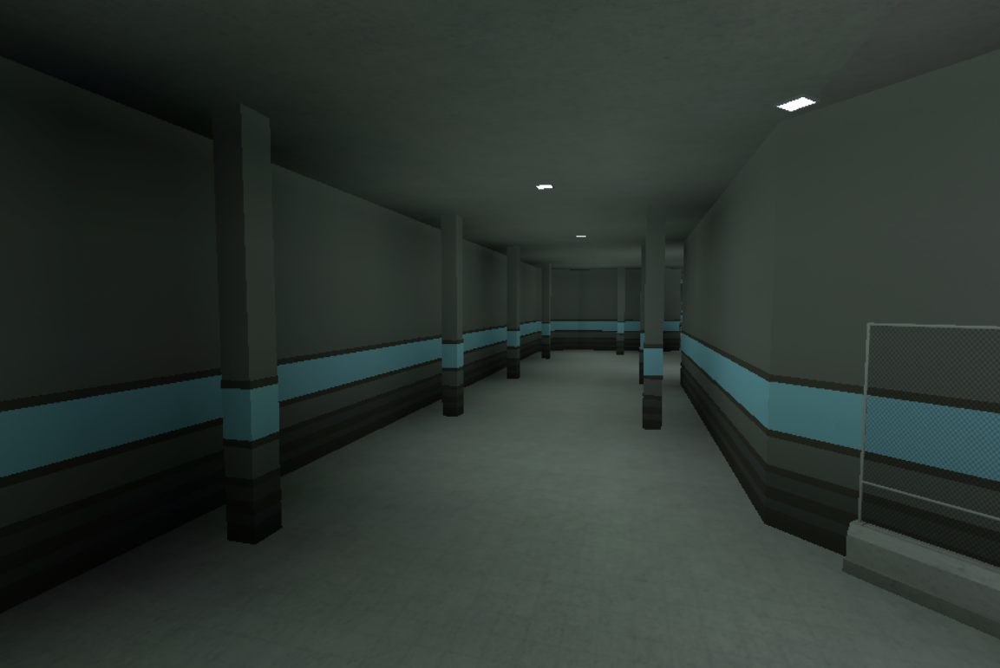
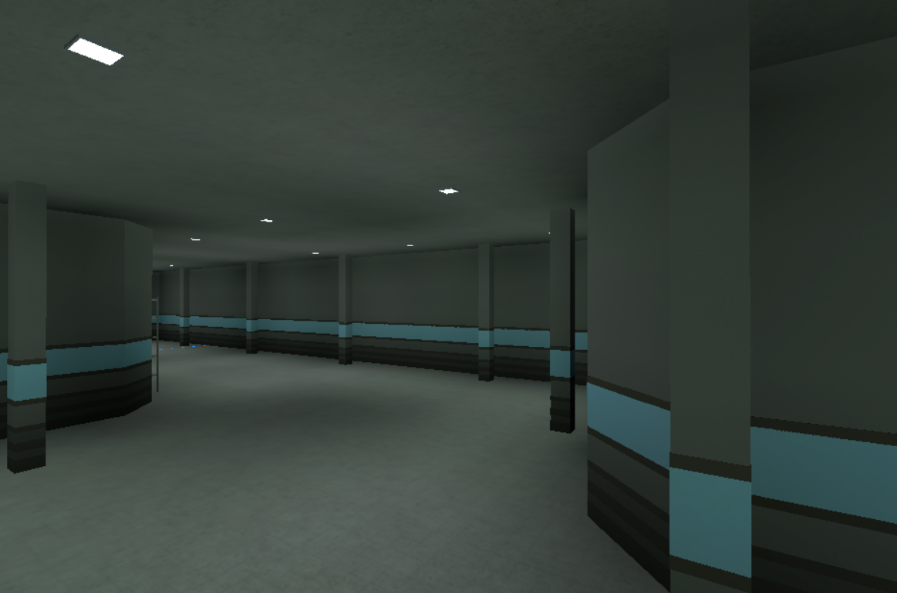
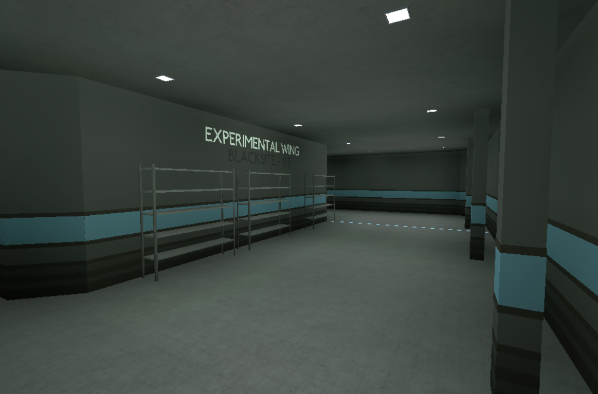
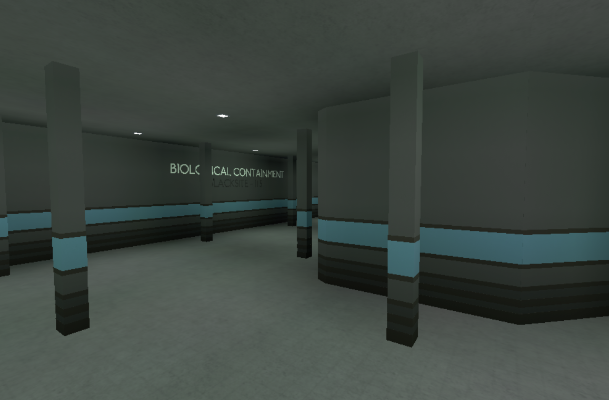

Roblox
| A Robloxot játékfejlesztési részét azért tartom egy hobbimnak, mert itten kitudom élni a fejlesztési vágyaimat, amit már Minecraftban nem igazán tudnék kivitelezni. |
| Rengeteg időmet és energiámat szánom egy-egy projektbe, amik nem mindig jönnek össze, de legalább tudok fejlődni. |
| Leginkább az építészetet csípem, mert a Lua-t nem ismerem még. |
| Sok embert is inspirál ez a platform, mert itten könnyen megvalósíthatod a projektjeidet, és ha sikeres is vagy, a Roblox Corporation megjutalmaz némi pénzzel |




